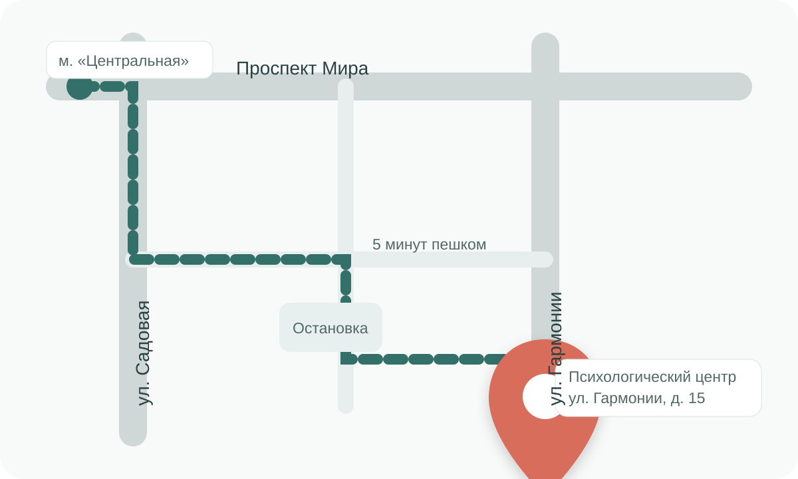

Связаться с нами
Контакты и схема проезда
Центр находится в пяти минутах ходьбы от станции метро «Центральная».
Психологический центр «Точка опоры»
Адрес:
г. Москва, ул. Гармонии, д. 15
Телефон:
+7 (495) 123-45-67
Электронная почта:
help@tochka-opory.ru
Режим работы:
Пн–Пт: 09:00–21:00
Сб–Вс: 10:00–18:00
Для посещения необходима предварительная запись.

Как добраться
От станции метро «Центральная» пройти по проспекту Мира до улицы Садовой, затем повернуть к улице Гармонии. Вход в центр расположен со стороны внутреннего двора.